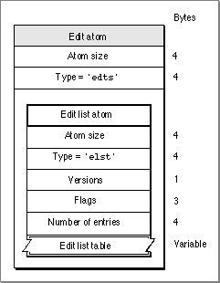

Edit Atoms
You can use edit atoms to define the portions of the media that are to be used to build up a track for a movie. Figure 4-15 shows the layout of an edit atom.Figure 4-15 The layout of an edit atom
- Note
- If the edit atom or the edit list atom is missing, you can assume that the entire media is contained in the track.

You define an edit atom by specifying these elements: